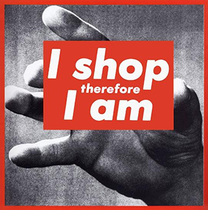

“Everyone thinks of changing the world, but no one thinks of changing himself.” —Leo Tolstoy
People should do less buying, working, littering, and more reading, exercising, enjoying nature. We all demand change, but we aren't prepared to change ourselves. Our current economic system, driven by supply and demand, is causing climate change. Guess where the demand is coming from, causing huge excesses. It's not from the 1%, nor the politicians, it's coming from everyone.
“Let he without sin cast the first rock.” —John 7:53–8:11
Don't assume bad intentions or conspiracy theories. Our world consists of incredibly complex interactions between everything and everyone. Those convinced of one specific bogeyman, use it—perhaps unconsciously—as an excuse to not change themselves. Ten years ago I believed that the September 11 attacks were orchestrated by the American government. It was easier to blame others than to acknowledge my own flaws. I still have frustrations about humanity, or disappointments in myself, but pointing fingers changes nothing. Unfortunately such ways of thinking are still ubiquitous; from gossip, religion, flat Earth societies, to denial of the holocaust or climate change. The information is pre-chewed, so difficult or confrontational thinking isn't necessary. Let alone reflecting on one's own flaws; you snowflakes. A sense of community is their strength. They feel special and accepted. Such unity is missing in our excessively consumerist work-obsessed society. Each on his own island; “as long as I'm OK.”
“If you have selfish, ignorant citizens, you're gonna get selfish, ignorant leaders.” —George Carlin
So, less buying and working. It's not that straightforward to just work less, at least not for everyone. Regardless, how much of our wants and needs are truly necessary instead of cultural habits or artificial nice-to-haves? The minority. Ever heard of the hedonic treadmill (1)? It means that human happiness tends toward a stable level despite going through remarkably negative or positive experiences.
That's one of the reasons why I wouldn't mind the prohibition of advertising. If a product needs ads, then it likely isn't essential. Ask yourself: “Hadn't I seen the ad, would I have spontaneously needed it?” Probably not. Moreover, it makes the environment look horrible—both physically and digitally.
Promotions should go as well. These are not given by the goodness of the company executives, but are precisely calculated to entice the largest number of people and increase the total number of sales. People tend to think they're saving, but in the long run the converse is true. Again, this is not due to malevolence, but merely a symptom of a system infected with greed; of which fashion is another horrendous symptom. You do not need the latest smartphone, nor ten pairs of shoes, nor a bimonthly new garment. Yet we keep buying them. We've even steeped so low as selling and buying pants with intentional tearing: artificial damage (2). Utter madness. The threat of artificial intelligence is no match for natural stupidity. Why don't we use clothing or any other item as long as possible, whereby normal wear and tear, artisanal repair, and longevity are seen as more respectable than the price or brand; evidently excluding unreasonably filthy or smelly clothes. In such a world, possessions would genuinely become a reflection of one's soul or character. Buying is easy, caring is not.
I take great pleasure in configuring my six-year-old Android smartphone to maximize its lifespan, better yet, to make it perform better than new devices. The same goes for only having one belt, one jacket, four sweaters, and so on. Through deliberate and drastic reduction of possessions, one treasures all that remains even more; just like a mechanical wristwatch that's valuable and beautiful precisely because it only consists of indispensable components. Minimalism is freedom; less is more.
Sure you can spend a significant sum of money on a product you frequently use, but at least take care of it to the best of your abilities. Things cost money, money requires labor, and labor drains time. Your time is the most valuable resource because it diminishes constantly and you can't replenish it. Therefore, the waste of stuff means a waste of time. You will die, your friends will die, everyone will die, and there is no afterlife. Stop living as if there is.
Who am I, and where do I get the audacity to utter such conceited ideas? I'm merely someone in a position of material luxury without remarkable problems (except for an occasional philosophical concern, a bout of loneliness, or a slight existential crisis). But aren't most Westerners? Perhaps not in relation with each other, but definitely in relation with the rest of the world: the majority. We mess up other people's environments and subsequently feel annoyed with migration. Sigh.
“There is no limit to your pretences, but you understand nothing.” —Diogenes of Sinope (404–323 BC)
Anyway, I do what I can, and leave what's not essential. I try to pick up the garbage that morons leave in nature, I eat vegan, I volunteer, I'm conscious of my carbon footprint, and I give a friendly nod to passersby who still dare to make eye contact. By such simple ways we can all truly contribute to a society which indefinitely strives for utopia.
 —Image: “I shop therefore I am.” by Barbara Kruger (1990)Unfortunately most people are practically obligated to contribute by ways of “living” that stifles the human potential. I consider it absurd that we have normalized spending more time with colleagues than with friends and family. Yet despite all this work “to make the world a better place”, it's still more likely to be born in poverty or to be raised by idiots. In a world where everyone's expected to work and consume more, there rests little time to contemplate and teach what it means to live a virtuous life. There is a collective shortage of philosophy. Instead of admiring popstars or actors, we should look up to formidable people such as Marcus Aurelius, Richard Feynman, Gwynne Shotwell, Ibn al-Haytam, Mary Wollstonecraft, Christopher Hitchens, Baruch Spinoza, Sam Harris, etc. Contemporary pretentious “adults” often act as if they have everything together, but in reality nobody knows what life is about, and merely do what's expected. “Selfieee!”
“Education has produced a vast population able to read, but unable to distinguish what is worth reading.” —G.M. Trevelyan
PS If all of this—understandably—comes across as arrogant, then that's a pity, but your problem. If music and television about incredibly superficial nonsense is still popular, if opinions are exalted above facts, or if corrupt shortsighted scientifically illiterate politicians still have power, in such a world I'll indulge my ignorant self an outlet as well.
PPS This text was originally written in Dutch for the magazine Zoeklicht (3). I omitted one paragraph about bitcoin because I do not support it anymore; a financial instrument that brings out the worst in people—greed—won't change the world for the better.
“For the love of money is the root of all evil.” —Timothy 6:10